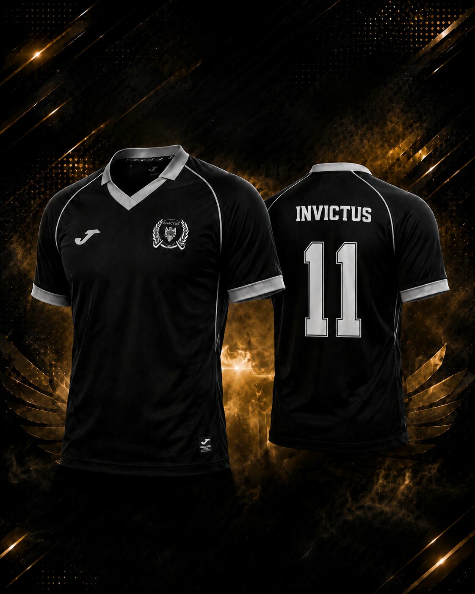

Patnáctá sezona si zaslouží novou podobu. Invictus 2011 proto připravil zápasové dresy pro ročník 2026/27, které navazují na klubovou identitu a zároveň otevírají novou kapitolu týmu.
01
Černobílá identita v novém provedení
Nová sada staví na černém základu, světlém lemování a výrazném klubovém znaku. Výsledkem je čistý a reprezentativní dres, který zachovává tradiční barvy Invictu a bude tým doprovázet v jubilejní sezoně 2026/27.
Dres pro nás nikdy nebyl jen sportovní výbavou. Nese znak klubu, připomíná společnou historii a reprezentuje Invictus při každém zápase, na týmových fotografiích i při dalších klubových událostech.

02
Vaše firma může být na hřišti s námi
Fungování amatérského futsalového klubu přináší během celé sezony řadu výdajů. Příspěvek partnera nám může pomoci s financováním nových dresů i dalších nákladů spojených s účastí v soutěžích a běžným provozem týmu.
Firmám, které se rozhodnou Invictus podpořit, nabízíme na oplátku možnost umístit jejich logo přímo na naše zápasové dresy. Logo se tak stane součástí týmové prezentace při utkáních, na společných fotografiích a v dalších materiálech, na kterých budou hráči v nové sadě zachyceni.
03
Partnerství nastavíme individuálně
Konkrétní podobu spolupráce chceme domluvit tak, aby dávala smysl klubu i partnerovi. Velikost a umístění loga na přední či zadní části dresu nebo na rukávu se mohou odvíjet od rozsahu podpory a dostupného prostoru.
Viditelné umístění firemního loga na nové zápasové sadě Invictu.
Partnerství s regionálním týmem, který funguje nepřetržitě od roku 2011.
Rozsah podpory i konkrétní podobu prezentace nastavíme společně.
Po vzájemné dohodě můžeme partnerství představit také na klubovém webu nebo oficiálním Instagramu Invictu. Nehledáme pouze logo na látce, ale partnera, který chce být součástí další etapy našeho klubu.
Staňte se součástí nové sezony
Podpořte Invictus.
Vaše logo může být na našem dresu.
Máte firmu, podnikáte nebo znáte někoho, koho by spolupráce mohla zaujmout? Ozvěte se nám. Rádi představíme možnosti partnerství a domluvíme podmínky osobně.